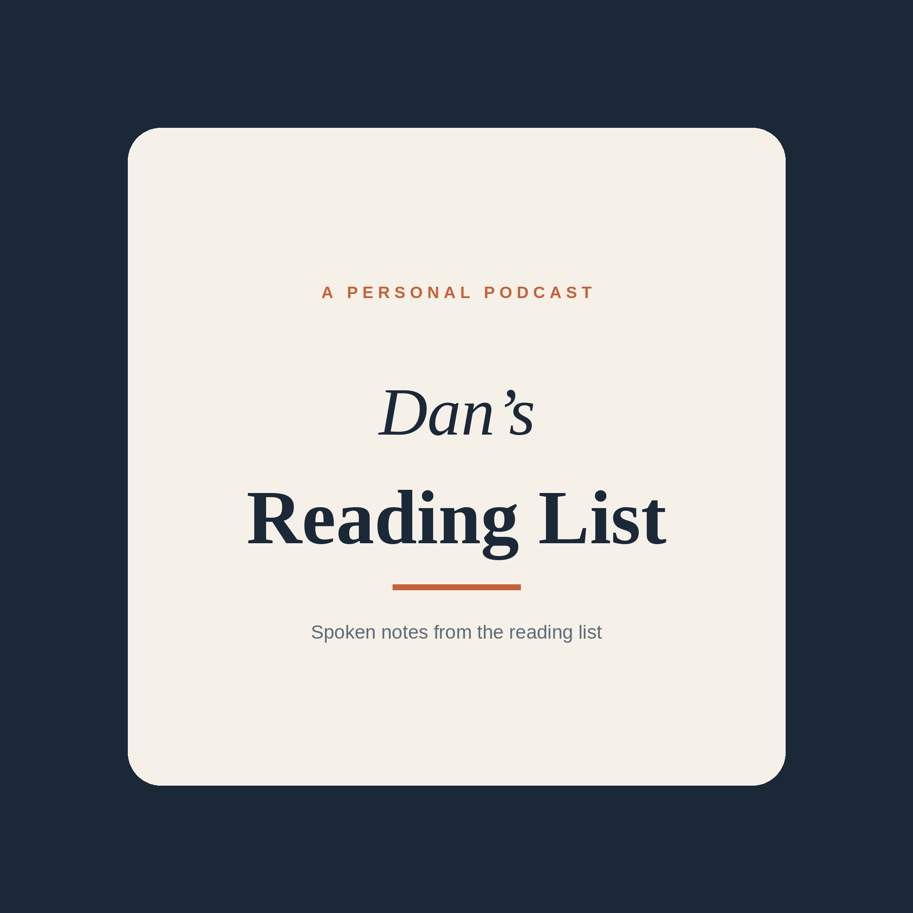

Spoken summaries and readings of articles from Dan's reading list.

Subscribe in Podcast Addict with this feed address:
https://dtrundle31-create.github.io/reading-podcast/feed.xml
November 11, 2026
Dan
Source